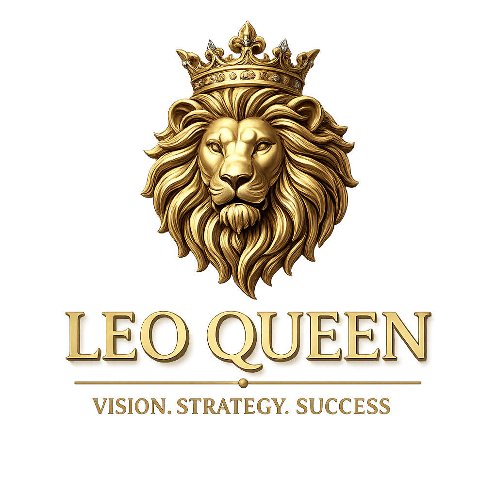

🧩
Quantum circuits
Build an understanding of qubits, gates, circuit structure, and measurement outcomes.
Exploring how noise affects quantum circuits—and how error-mitigation techniques can help estimate more reliable results in the NISQ era.

Quantum processors operate with fragile quantum states. Interactions with the environment and imperfect operations can affect circuit outcomes. This project presents the ideas behind quantum noise, circuit behavior, and error mitigation through a visual, educational experience.
Build an understanding of qubits, gates, circuit structure, and measurement outcomes.
Learn how imperfect operations and decoherence can change the behavior of a quantum circuit.
Explore strategies that use noisy results to estimate values closer to the ideal behavior.
A conceptual three-stage workflow for studying the effect of noise on quantum computation.
Choose qubits, gates, and measurements to define the quantum operation being studied.
Apply a selected noise model in a simulator and compare outcomes with an idealized baseline.
Compare measurement statistics and investigate mitigation techniques such as ZNE.
Circuit folding is used in some zero-noise-extrapolation workflows to increase effective noise while preserving the ideal circuit action. Results at different noise scales can then be compared.
Concept illustration, not a measured experiment.
Run a circuit at several effective noise levels, estimate the observable at each level, and extrapolate the trend toward a zero-noise limit.
Illustrative trend only; no project-specific results are represented.
Models a type of random disturbance that can move a quantum state away from its intended state.
Represents energy loss, such as a qubit relaxing from an excited state toward a lower-energy state.
Models loss of phase coherence, affecting the interference that quantum algorithms rely on.
Python ecosystem for defining quantum circuits and running supported simulators or quantum backends.
General-purpose language commonly used to connect circuit setup, simulation, and analysis workflows.
Numerical arrays and mathematical operations for data processing and analysis.
Plotting library for presenting distributions, comparisons, and trends.
AI-assisted app-building platform identified in the supplied project description.
Charts can help communicate differences between idealized and noisy outcomes.
This short snippet illustrates circuit construction and measurement. It is an educational example, not proof of the live website’s backend implementation.
from qiskit import QuantumCircuit
# Create a two-qubit circuit with measurements
qc = QuantumCircuit(2, 2)
qc.h(0) # Put qubit 0 into superposition
qc.cx(0, 1) # Entangle the two qubits
qc.measure([0, 1], [0, 1])
print(qc)The generated cover art and charts on this page are illustrative. Confirmed implementation details, live controls, measured results, and backend libraries should be documented only after checking the source code or testing the deployed application.
